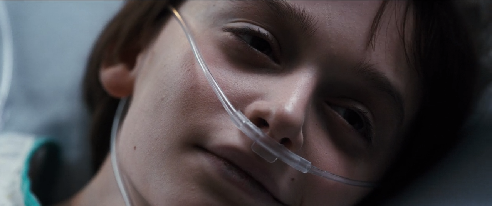

Tudo começa quando um cientista está indo até o elevador com medo e após entrar no elevador é pego por um monstro estranho, logo após mostra Will, Dustin, Lucas e Mike jogando RPG, depois de terminarem de jogar, cada um vai para sua casa e no caminho para casa, Will passa perto de um laboratório e vê algo estranho na estrada, ele larga a bicileta e sai correndo para a sua casa, chegando lá ele se esconde em uma cabana com uma espingarda, mas é pego pelo monstro. Joyce a mãe de Will chega em casa e fica preocupada, pois não vê Will em casa, ela liga pra casa do Mike, mas ele não tá lá. Desesperadamente ela vai para a delegacia e conversa com o Xerife Hopper, no qual fala que vai procurar o seu filho. Enquanto isso no laboratório o Dr. Brenner desce no elevador para um lugar especial onde é descoberto que um monstro saiu de lá e uma menina fugiu, uma menina na qual tem poderes mentais e se chama onze ou on. Onze chega em um restaurante e começa a comer a comida, o dono vê aquilo e pergunta quem é ela, porém ela não responde, o dono vendo que uma menina com a cabeça raspada e de avental está passando fome, faz um sanduíche para ela, enquanto ela tá comendo ele chama o serviço social, quando o suposto serviço social chega, onze sai correndo, e o pessoal vai atrás dela com arma na mão. Voltando ao laboratório, tem uma cena que tem pesssoas ouvindo conversas telefônicas.

Após o sumiço de Will, Mike, Dustin e Lucas vão atrás dele na chuva, e no meio do caminho encontram onze, uma menina na qual estava toda molhada e suja de lama,Os meninos levam a Onze para casa e a escondem no porão. Mike tem a ideia de Onze tocar a campainha de casa, para que seus pais não soubessem que eles estavam na floresta de noite. Mas ela recusa, dizendo que está em perigo. Onze vê uma foto dos quatro meninos juntos e aponta para o rosto de Will e fica muito assustada. Mike e Onze ficam muito próximos logo depois de Mike ensinar a Onze o significado de palavras e várias outras coisas. Mike conta para Lucas e Dustin que existe algo estranho por traz de Onze e que ela pode ajudar a encontrar Will, uma vez que ela o conhece. Lucas não concorda com a ideia e decide contar para os pais de Mike. Quando ele abre a porta, Onze a fecha duas vezes com a força da mente, já revelando seus poderes.

Nancy e Barbara chegam a festa na casa do Steve, mas Barbara não está contente. Ela acha que o Steve não gosta realmente de Nancy, mas só quer se divertir com ela por uma noite. Jonathan vai para a floresta a procura de provas sobre o desaparecimento de Will e leva sua câmera. Ao se aproximar da casa de Steve, ele começa a tirar fotos das pessoas na festa. Na casa de Joyce, o telefone toca e ao atendê-lo, ela escuta uma série de barulhos e também a voz de Will dizendo “mãe”.Logo após, o telefone queima, de novo. As luzes da casa começam a piscar, como em curto circuíto e ela as segue até o quarto de Will, onde o rádio começa a tocar uma música. Ela pergunta se é o Will que está lá e depois vê mãos saindo pela parece, como se alguém estivesse dentro do papel de parede.Na casa de Steve, Nancy e os outros estão molhados e sobem para os quartos para se trocarem. Barbara fica revoltada com Nancy, que diz para ela ir embora. Chateada, Barb sai da casa e senta-se na piscina e Jonathan continua tirando fotos. O sangue do corte na mão de Barbara pinga na água da piscina, escutamos um barulho e a tela fica preta. Então Barbara acorda no lado invertido onde Will supostamente estaria. Os meninos combinam de encontrar Onze 15h15 para procurarem pelo Will. Para isso, eles dão um relógio para ela. O Xerife Hopper decide ir até o laboratório investigar o sumiço do Will e consegue acesso às imagens das câmeras de segurança no dia em que o menino sumiu, mas não encontram nada incomum.

Onze sozinha na casa de Mike vê uma propaganda de coca-cola e lhe passa um flash-back em sua mente, onde ela lembra que tinha que amassar a lata com o pode de sua mente e logo após o seu nariz sangra. Joyce está cada vez mais paranóica com o sumiço de seu filho e coloca luzes de natal para se comunicar com Will. Steve é zombado por seus amigos por ter ficado com Nancy. Nancy fica cada vez mais preocupada com o sumiço de Barbara. Mike, Lucas e Dustin sofrem bulling de dois meninos da escola. A polícia começa a investigar o laboratório e lembram do caso de Terry Ives, que alegou que sua filha foi sequestrada e levada ao laboratório para experimentos feitos pelo Dr.Brenner. Jonhatan chega na escola com as fotos reveladas e os amigos do Steve rasgam as fotos e zombam dele, Nancy pega as fotos e leva para casa de Steve e percebe que o carro de Barbara ainda está lá. Após chegar na casa de Steve, ela começa a caçar a Barbara e vê o Demogorgon, no qual ela define como uma coisa sem rosto.

As luzes de natal da casa de Joyce começam a piscar e ela pergunta se é Will, no alfabeto que Joyce fez Will responde que é ele e ela pergunta onde ele está, e ele responde que está ali e ela pergunta o que ela deve fazer e Will manda ela fujir. Os meninos saem de bicicleta a procura de Will e começam a seguir carros da polícia, eles chegam no lago e lá a polícia fala que encontrou Will, porém morto. Joyce se recusa a aceitar que Will morreu e tenta se comunicar com ele. Os meninos colocam roupas novas em Onze. Nancy e Jonathan acabam se unindo. Hopper consegue entrar no laboratório, enquanto Nancy e Jonathan confrontam as forças que levaram Will. Os meninos perguuntam ao Sr. Clarke como se vai parar em outra dimensão. Desesperado, Jonathan procura por Nancy na escuridão e Steve faz a mesma coisa. Hopper e Joyce descobrem a verdade sobre os experimentos conduzidos no laboratório. Onze tenta chegar a Will, mas Lucas dá o alerta de perigo. Nancy e Jonathan mostram a polícia as imagens capturadas pela câmera. O Dr.Brenner interroga Hopper e Joyce, enquanto os meninos e Onze estão no ginásio. Will é encontrado, Joyce e Jonathan ficam no hospital com ele. Logo em seguida Jonathan e Nancy se preparam para uma nova batalha.
